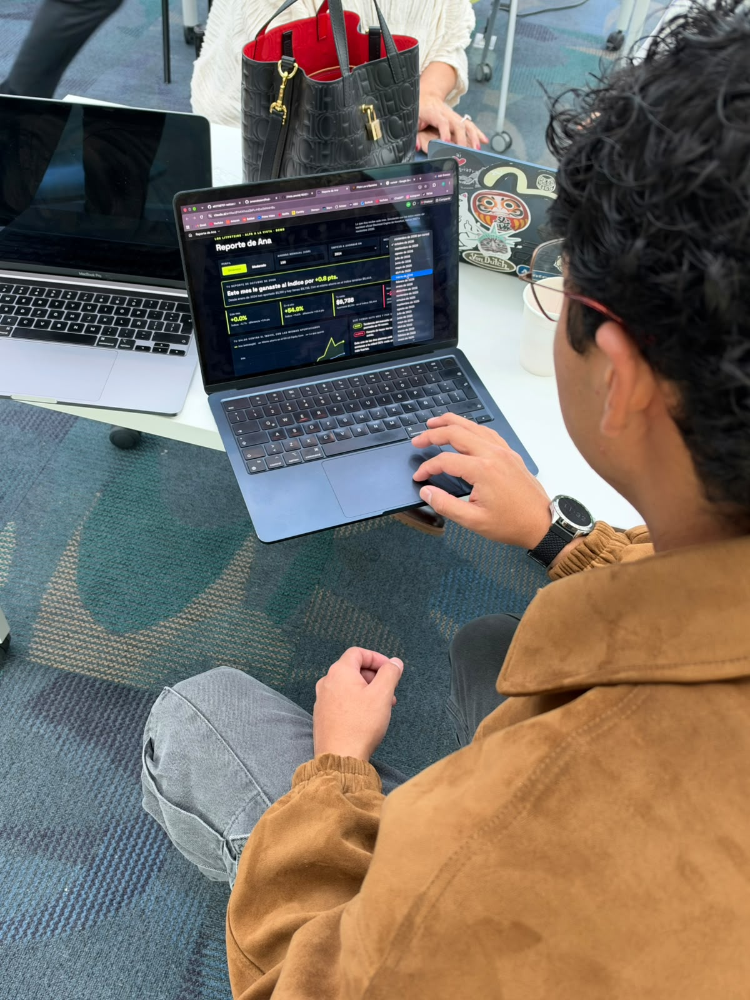
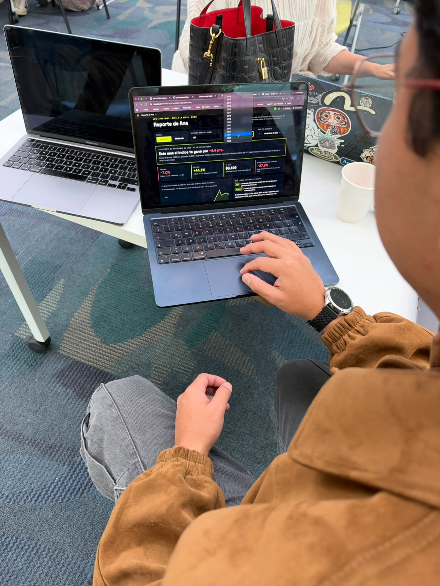

TALAVERA VALLEY HACKATHON 2026 · TRACK 04 WEALTHTECH
DHAR CAPITAL
Una estrategia en dólares que le gana al KN US Equity Core, con el riesgo a la vista.
«Inversión activa que genere alfa, de forma transparente, para un mejor retiro.»
Curva de capital del modelo · Backtest Engine de KaxaNuk · 2007–2026
DOS GENERACIONES, DOS SISTEMAS
02 / 13
MIGUEL · 60 AÑOS
Ley 73
Su pensión la paga el gobierno, pase lo que pase en los mercados.
ANA · 22 AÑOS · PRIMER EMPLEO
43 años
Lo que reciba depende de cuánto ahorre y de cuánto rinda ese ahorro durante 43 años.
15%
del salario se aportará al retiro de Ana hacia 2030
¿?
si su dinero le está rindiendo bien: hoy no es fácil saberlo
LO QUE LE FALTA A ANA
03 / 13
4%
rendimiento real anual que proyecta la CONSAR para Ana
~22%
de su Siefore está en acciones; el resto, sobre todo en deuda
2.0%
real anual de los planes de pensiones de empresas a 5 años
$1 AHORRADO HOY, EN 43 AÑOS (ILUSTRATIVO)
Año 0
Año 43
≈8.8% real → $37.3
4% real → $5.4
VALIDACIÓN · DURANTE EL HACKATHON
04 / 13
USUARIO · PROBÓ LA DEMO
Usó el Reporte de Ana durante el hackathon (fotos de la derecha).
MENTOR · ARTURO, KAXANUK
Así se ve cómo se comporta en los peores y en los mejores momentos.
LO QUE HICIMOS
Con 4 crisis adentro: 2008, COVID, 2022 y los aranceles de 2025.


LA SOLUCIÓN · 1 DE 2 · QUÉ COMPRA
05 / 13
ACCIONES · 3 EMPRESAS
30–60%
Las 3 con más impulso de las 300 más grandes del KN US Equity Core: van subiendo, no caen más de 15% y subieron en 6 meses. Máximo 20% cada una.
Noviembre 2026: Moderna, CrowdStrike y Palo Alto Networks.
ETFs DE SECTOR · 2 FONDOS
40–100%
Un ETF compra un sector completo. Tomamos los 2 que más subieron en 12 meses entre 6: tecnología, finanzas, energía, consumo, industria y materiales.
Noviembre 2026: materiales (XLB) y energía (XLE).
BONOS EN ETF · SOLO EN TORMENTA
0 o 100%
Bonos del Tesoro de EE.UU.: SHY (1 a 3 años) o IEF (7 a 10 años), el que vaya mejor. También cubren el lugar de una acción si no hay 3 que pasen el filtro.
Última vez: enero de 2023.
PROMEDIO 2007–2026
Bonos 10%: SHY 6%, IEF 4%
LA SOLUCIÓN · 2 DE 2 · UN MODELO DINÁMICO
06 / 13
Cada fin de mes, la cartera de Ana:
Acción
ETF de sector
Bonos (ETF)
62% de los meses
20%
20%
20%
20%
20%
26% de los meses
10%
10%
10%
35%
35%
y el modelo de riesgo confirma · 9%
100% en bonos: SHY o IEF
ALARMA 1 · TENDENCIA
El S&P 500 cae debajo de su promedio de los últimos 10 meses.
ALARMA 2 · CANARIO DE TASAS
Los bonos contra inflación (TIP) pierden en promedio a 1, 3, 6 y 12 meses.
SIEMPRE
Ana no decide nada. Se compra al día siguiente, sin préstamos ni ventas en corto.
DEMO EN VIVO · EL BACKTEST, MES A MES
07 / 13
ABRIR LA DEMO
Reporte de Ana: elige perfil, ahorro mensual y mes. Calcula con los 237 meses reales del backtest. Un usuario la probó y dijo que sí invertiría.
DE DÓNDE VINO EL ALFA · 2007–2026
Selección de acciones +1,670%
Factor momentum +1,029%
Exposición al mercado −310%
REPORTE DE ANA · OCTUBRE 2026
Captura de la demo
+0.7 pts
octubre: 0.0% contra −0.7% del KN US Equity Core
+35.4 pts
en 2026: +44.1% contra +8.7% del KN US Equity Core
−27.3%
caída desde el máximo del 22 de junio de 2026
Por qué: el mercado sigue arriba de su tendencia, pero el canario de tasas encendió una alarma. Por eso las acciones bajaron a la mitad: MU, MRNA y DELL a 10% cada una, y tecnología y energía a 35%.
BACKTEST OFICIAL · 19.7 AÑOS · CON 2008, COVID, 2022 Y ARANCELES 2025
08 / 13
+7.4%
alfa anual contra el KN US Equity Core (+6.2% con costos de estrés)
17.8%
rendimiento anual, contra 10.5% del KN US Equity Core
0.68
Sharpe (rendimiento por riesgo), contra 0.52 del KN US Equity Core
+4.8%
alfa con costos de estrés en 2010–2026, años que el modelo de riesgo nunca vio
VALOR DE $100,000 · ESCALA LOGARÍTMICA · PEOR CAÍDA −34.0% CONTRA −52.7% DEL KN
2007
2026
Modelo: $2.83 M
KN US Equity Core: $0.76 M
¿Por qué desde 2007? Fecha fijada antes de probar las 40 variantes; incluye 2008 completo.
¿POR QUÉ NOSOTROS?
09 / 13
| Solo su Afore | El SPY por su cuenta | DHAR Capital | |
|---|---|---|---|
| Rendimiento | 4% real proyectado (CONSAR) | 10.4% anual | 17.8% anual (16.6% con costos de estrés) |
| Peor caída | Sin dato (≈ 22% en acciones) | −55.2% | −34.0% |
| Rendimiento por riesgo (Sharpe) | — | 0.52 | 0.68 |
| Quién la acompaña | Hoy no es fácil saber si le rinde bien | Nadie: decide sola cuándo salir | Reporte mensual: alfa, riesgo y por qué |
EL RIESGO, EXPLICADO A ANA
10 / 13
−34.0%
peor caída del modelo (febrero–abril de 2025, aranceles)
−52.7%
peor caída del KN US Equity Core (crisis de 2008)
LO QUE LE DECIMOS CON HONESTIDAD
Habrá años en que pierda contra el índice. El mayor riesgo de Ana no es una caída: es vender en pánico y no volver.
CAÍDA DESDE EL MÁXIMO ANTERIOR · 2007–2026
2007
2026
Modelo
KN US Equity Core
MODELO DE NEGOCIO Y SIGUIENTES PASOS
11 / 13
QUIÉN PAGA
La ofrece a sus empleados jóvenes, como Ana, vía nómina. Gana retención de talento.
CUÁNTO
1,000 empleados × $100 USD al mes = $1.2 M el primer año y $6,000 de cuota, que crece con cada aportación.
PERFIL DEL PRIMER CLIENTE
Una empresa de Puebla con empleados de primer empleo que quiera retener talento.
30
Piloto. Los empleados de la primera empresa reciben el reporte. Medimos inscripción, ahorro y si lo entienden.
60
Operación legal. Alianza con una casa de bolsa registrada ante la CNBV: ellos custodian, nosotros damos algoritmo y reporte.
90
Escalar. Reportes con dinero real, dos empresas más en Puebla y conversación con inversionistas.
LÁMINA DE MÉTODO · EXPERIMENTACIÓN
12 / 13
40
variantes probadas, cada una con su criterio escrito antes de correrla
158
corridas en el Backtest Engine de KaxaNuk, con costos normales y de estrés
+3.0 → +4.3 → +7.4
puntos de alfa en las 3 versiones del modelo durante el hackathon
01
Primero la lógica. Cada regla tiene una razón económica publicada, escrita antes de ver los datos. Sobreajustar es memorizar las respuestas de un examen viejo.
02
Años que nunca vio. La regla de acciones se diseñó con datos desde 2012 y en 2007–2014 le ganó al índice por +3.9 puntos al año. El modelo de riesgo aprendió con 2000–2009 y después quitó 30% de las falsas alarmas.
03
Movimos las perillas. Las 7 de 7 variantes de parámetros le ganan al índice, y la elegida no es la que más rinde.
04
Sin sesgo de supervivencia. Usamos las empresas del índice en cada fecha, incluidas las que quebraron. Hacerlo mal llevó una prueba de 35% a 7% al año.
CIERRE
13 / 13
Miguel tiene al gobierno. Ana puede tener una estrategia que trabaje por ella, con el alfa y el riesgo a la vista.
Más alfa que el KN US Equity Core, después de costos, y un reporte que le dice cada mes por qué.
DHAR Capital · equipo Los LITpsteins
Demo: Reporte de Ana · código, backtest y método en el repo del hackathon